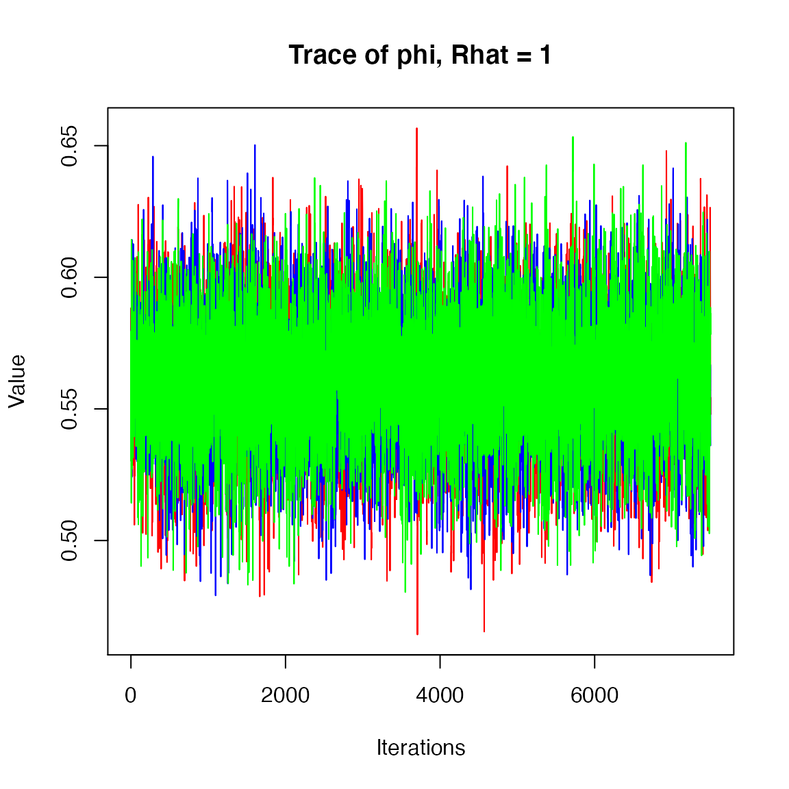
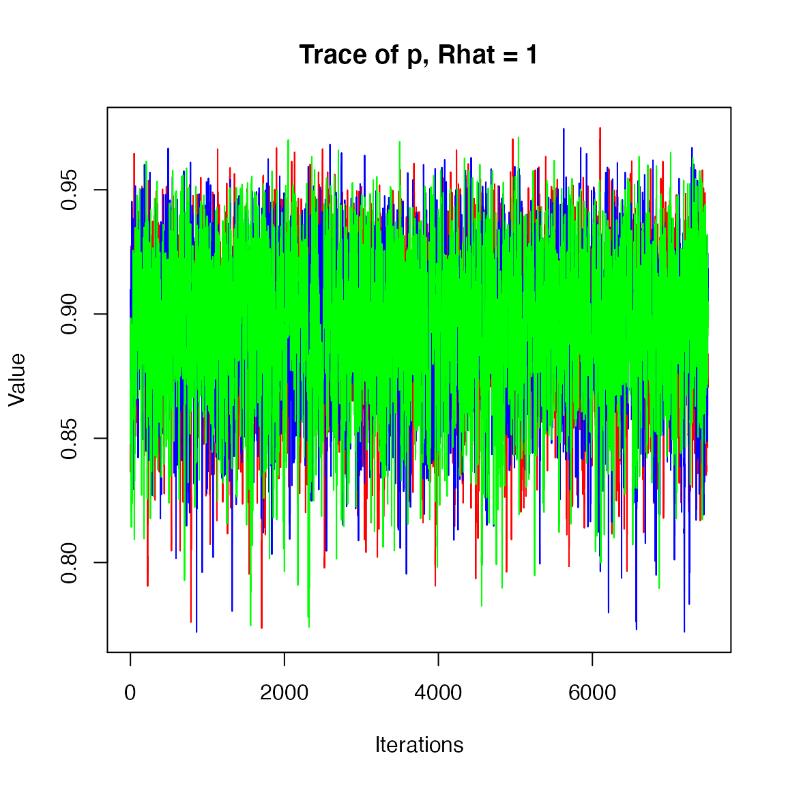

Estimating apparent survival: Basic Cormack-Jolly-Seber models
WILD6900
2020-01-04
cjs.RmdIn the lab, we’ll fit several versions of the Cormack-Jolly-Seber model to estimate apparent survival and detection probability from capture-recapture data.
The data
To learn more about the CJS model, we will use the famous dipper data set (Lebreton et al. 1992). The data comes from a population of European dippers in France and has been used in countless mark-recapture tutorials. Individual birds (n = 294) were captured and banded over 7 consecutive years during early summer along streams, providing 6 re-encounter occasions.

We will treat the capture histories as a \(294 \times 7\) matrix, which can be read into R with the following code:
The basic CJS model in JAGS
Next, let’s create a .jags file with the model code. To start, we’ll fit the most simple CJS model available - constant \(\phi\) and \(p\). Remember that the state-space version of the CJS model can be written as:
Observation model
\[\large y_{i,t} \sim Bernoulli(z_{i,t}p)\]
Notice that to write this model in JAGS, we need to start the likelihood at the first capture occasion of each individual (we ignore all occasions prior to the first capture). In the model statement above, we call this occasion \(f_1\). In JAGS, we simply provide a vector of length \(n\) called \(f1\) as data and each element can take any integer value from 0-7.
sink("jags/cjs.jags")
cat("
model{
# Priors
phi ~ dbeta(1, 1)
p ~ dbeta(1, 1)
# Likelihood
for(i in 1:nInd){
# Known to be alive on first occasion
z[i, f1[i]] <- 1
for(t in (f1[i] + 1):nOcc){
# State model
z[i, t] ~ dbern(phi * z[i, t - 1])
# Observation model
y[i, t] ~ dbern(p * z[i, t])
} # end t loop
} # end i loop
} # end model
", fill = TRUE)
sink()Fitting the model
Now we’re ready to fit the model. First, we need to create the vector f1. We’ll do this by using the apply function to determine, for each row, what is the first \(1\) in the capture history:
## The function min(which(x==1)) first returns which elements in the vector are 1 and then return the minimum of those values
## The `apply` function allows us to apply this function to each row (MARGIN = 1)
f1 <- apply(X = dipper, MARGIN = 1, FUN = function(x) min(which(x == 1)))
## Bundle data
jags.data <- list(y = dipper, nInd = dim(dipper)[1], nOcc = dim(dipper)[2], f1 = f1)As we saw for occupancy and closed-population CMR models, it’s important to provide good initial values for z. These initial values need to be stored in a matrix with the same dimensions as the capture history matrix. Also, we have to be sure not to provide initial values for any nodes that are deterministic (i.e., the first capture occasion, which we know is 1). So we’ll create a matrix that has NA for occasions 1-f1 and then 1’s after that:
z.init <- matrix(NA, nrow = 294, ncol = 7)
for(i in 1:dim(z.init)[1]){
z.init[i, f1[i]:dim(z.init)[2]] <- 1
z.init[i,f1[i]] <- NA
}
### Initial values
inits <- function(){list(phi = runif(1), p = runif(1),
z = z.init)}
### Parameters
params <- c("phi", "p")
### MCMC settings
nc <- 3
ni <- 10000
nb <- 2500
nt <- 1Now fit the model and look at the output:
dipper1 <- jagsUI::jags(data = jags.data, inits = inits, parameters.to.save = params,
model.file = "jags/cjs.jags", n.chains = nc, n.iter = ni, n.burnin = nb, n.thin = nt,
parallel = TRUE)
jagsUI::traceplot(dipper1)
print(dipper1)#>
#> Processing function input.......
#>
#> Done.
#>
#> Beginning parallel processing using 3 cores. Console output will be suppressed.
#>
#> Parallel processing completed.
#>
#> Calculating statistics.......
#>
#> Done.
#> JAGS output for model '/Users/clarkrushing/Desktop/WILD6900/inst/jags/cjs.jags', generated by jagsUI.
#> Estimates based on 3 chains of 10000 iterations,
#> adaptation = 100 iterations (sufficient),
#> burn-in = 2500 iterations and thin rate = 1,
#> yielding 22500 total samples from the joint posterior.
#> MCMC ran in parallel for 0.531 minutes at time 2020-01-04 19:50:35.
#>
#> mean sd 2.5% 50% 97.5% overlap0 f Rhat n.eff
#> phi 0.562 0.025 0.512 0.562 0.611 FALSE 1 1.000 12210
#> p 0.895 0.029 0.832 0.897 0.946 FALSE 1 1.000 17118
#> deviance 164.815 28.065 114.717 162.828 225.051 FALSE 1 1.001 7328
#>
#> Successful convergence based on Rhat values (all < 1.1).
#> Rhat is the potential scale reduction factor (at convergence, Rhat=1).
#> For each parameter, n.eff is a crude measure of effective sample size.
#>
#> overlap0 checks if 0 falls in the parameter's 95% credible interval.
#> f is the proportion of the posterior with the same sign as the mean;
#> i.e., our confidence that the parameter is positive or negative.
#>
#> DIC info: (pD = var(deviance)/2)
#> pD = 393.8 and DIC = 558.6
#> DIC is an estimate of expected predictive error (lower is better).Looks good!
Modeling group effects
The original dipper data also includes information about the sex of each individual. Let’s use these data to test whether survival differs for males vs. females. First, read in the sex data:
data("sex")The model
For the sex-specific survival model, we’ll simply estimate two separate survival probabilities and use a vector to index which survival probability applies to each individual:
sink("jags/cjs_group.jags")
cat("
model{
# Priors
phi[1] ~ dbeta(1, 1)
phi[2] ~ dbeta(1, 1)
p ~ dbeta(1, 1)
# Likelihood
for(i in 1:nInd){
# Known to be alive on first occasion
z[i, f1[i]] <- 1
for(t in (f1[i] + 1):nOcc){
# State model
z[i, t] ~ dbern(phi[sex[i]] * z[i, t - 1])
# Observation model
y[i, t] ~ dbern(p * z[i, t])
} # end t loop
} # end i loop
# Derived parameters
delta.phi <- phi[1] - phi[2]
} # end model
", fill = TRUE)
sink()Fitting the model
No need to re-create the f1 vector so all we need to do is add the vector with the sex information (though we do need to covert this to 1 (female) and 2 (male)):
sex <- as.numeric(as.factor(sex))
## Bundle data
jags.data <- list(y = dipper, nInd = dim(dipper)[1], nOcc = dim(dipper)[2], f1 = f1, sex = sex)As we saw for occupancy and closed-population CMR models, it’s important to provide good initial values for z. These initial values need to be stored in a matrix with the same dimensions as the capture history matrix. Also, we have to be sure not to provide initial values for any nodes that are deterministic (i.e., the first capture occasion, which we know is 1). So we’ll create a matrix that has NA for occasions 1-f1 and then 1’s after that:
z.init <- matrix(NA, nrow = 294, ncol = 7)
for(i in 1:dim(z.init)[1]){
z.init[i, f1[i]:dim(z.init)[2]] <- 1
z.init[i,f1[i]] <- NA
}
### Initial values
inits <- function(){list(phi = runif(2), p = runif(1),
z = z.init)}
### Parameters
params <- c("phi", "p", "delta.phi")
### MCMC settings
nc <- 3
ni <- 10000
nb <- 2500
nt <- 1Now fit the model and look at the output:
dipper2 <- jagsUI::jags(data = jags.data, inits = inits, parameters.to.save = params,
model.file = "jags/cjs_group.jags", n.chains = nc, n.iter = ni, n.burnin = nb, n.thin = nt,
parallel = TRUE)
jagsUI::traceplot(dipper2)
print(dipper2)#>
#> Processing function input.......
#>
#> Done.
#>
#> Beginning parallel processing using 3 cores. Console output will be suppressed.
#>
#> Parallel processing completed.
#>
#> Calculating statistics.......
#>
#> Done.


#> JAGS output for model '/Users/clarkrushing/Desktop/WILD6900/inst/jags/cjs_group.jags', generated by jagsUI.
#> Estimates based on 3 chains of 10000 iterations,
#> adaptation = 100 iterations (sufficient),
#> burn-in = 2500 iterations and thin rate = 1,
#> yielding 22500 total samples from the joint posterior.
#> MCMC ran in parallel for 0.493 minutes at time 2020-01-04 19:51:11.
#>
#> mean sd 2.5% 50% 97.5% overlap0 f Rhat n.eff
#> phi[1] 0.553 0.034 0.485 0.553 0.619 FALSE 1.000 1 22500
#> phi[2] 0.571 0.035 0.501 0.571 0.640 FALSE 1.000 1 9721
#> p 0.896 0.029 0.832 0.898 0.945 FALSE 1.000 1 16695
#> delta.phi -0.019 0.048 -0.113 -0.019 0.076 TRUE 0.655 1 22500
#> deviance 164.546 27.646 115.080 162.753 223.127 FALSE 1.000 1 22500
#>
#> Successful convergence based on Rhat values (all < 1.1).
#> Rhat is the potential scale reduction factor (at convergence, Rhat=1).
#> For each parameter, n.eff is a crude measure of effective sample size.
#>
#> overlap0 checks if 0 falls in the parameter's 95% credible interval.
#> f is the proportion of the posterior with the same sign as the mean;
#> i.e., our confidence that the parameter is positive or negative.
#>
#> DIC info: (pD = var(deviance)/2)
#> pD = 382.2 and DIC = 546.7
#> DIC is an estimate of expected predictive error (lower is better).So we can see that there’s a 65% probability that male survival is higher than female survival. Not much evidence of a survival difference but see how simple it is to estimate derived parameters and their uncertainty?
Other models
As we’ve seen throughout the semester, once we have the basic model structure in place, it’s relatively straightforward to add additional sources of complexity. For example, time effects, individual heterogeneity, covariates, trap responses, and interactions among these variables (though just remember that even though we can fit these models, that doesn’t necessarily mean that we can reliably estimate all of the parameters). Next week, we’ll explore a few of these more complex CJS models, as well as more efficient ways to parameterize the CJS model and ways to check for parameter identifiability. Stay tuned!